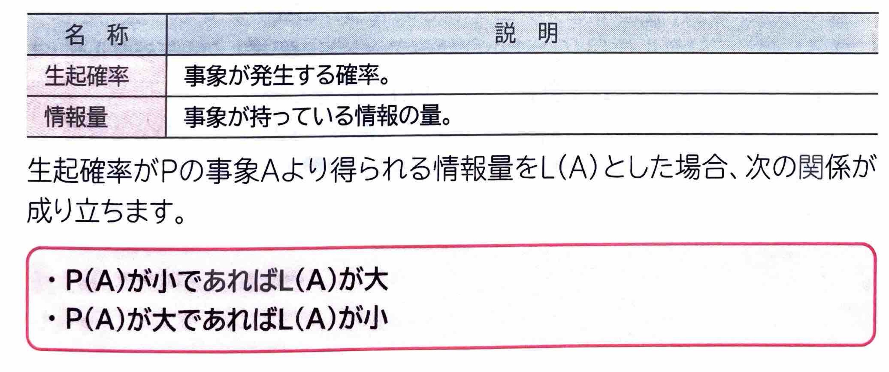
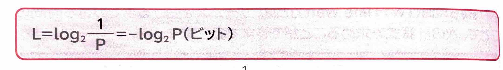
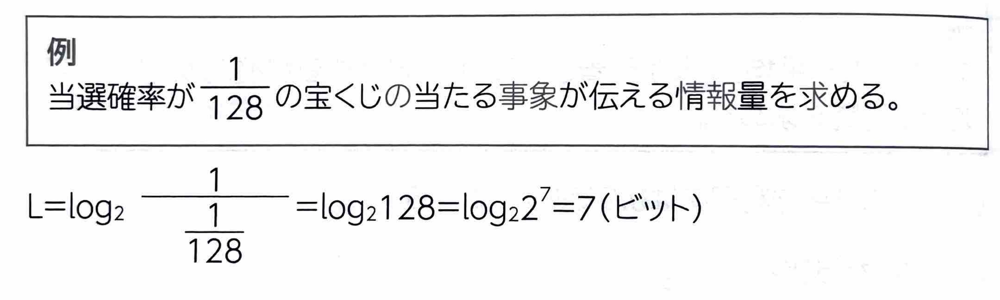

【 情報理論 】
表示
｢情報理論｣
とは、応用数学の確率や統計などを利用して、事象が発生する確率や情報の量の関係などを数値として求めることが出来ます。
情報理論で使われる用語には、次のようなものがあります。

また、生起確率Pと情報量Lの関係は、次のように定義されます。

上記の定義から、1ビットは確率\(\frac{1}{2}\)で起こる事象を伝える情報量(nビットは確率\(\frac{1}{2^n}\)で起こる事象を伝える情報量)といえます。
